FFTA/FFTA2 Jobs
FFTA and FFTA2 share about 95% of their jobs and abilities, though some have been renamed and others moved around. Items relevant to FFTA only will be shown in blue while those only related to FFTA2 will be shown in red.
Expand All Images | Collapse All Images
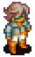
|
| NAME: Agent (FFTA2 Only) |
| OVERVIEW: Al-Cid's class, the only hume who can use guns. He has special skills if there are girls in the party! Al-Cid is also the only one who can't change classes, so he's stuck with the abilities he can learn. |
| WEAPONS: Guns |
ABILITIES/MAGIC:
Reconnaissance:
Escort - Take all damage directed at target female unit until her next turn.
Flourish - Deal more damage if female units are in party.
Fawn - Add Regen and Astra to target female unit.
Enchant - Charm female unit and raise allies' Attack.
Interrogate - Reveal loot and items of target, and reveals traps and invisible units.
Succor - Restore HP and remove debuffs from self.
Impassion - Add Berserk and raise critical hit %.
Reckless Abandon - Lower target's speed.
Reaction Abilities: None
Support Abilities: None
|
| ATTRIBUTES: |
|
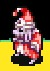
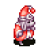 
|
| NAME: Alchemist |
| OVERVIEW: Although they can use items innately, they have no relation to the Chemist. |
| WEAPONS: Mace |
ABILITIES/MAGIC:
Alchemy:
Astra - Protect target from one status ailment
Death - Cause instant death to target, high chance of failure
Meteor - Summon a meteor to cause heavy damage
Rasp - Drain MP from target
Flare - Heavy damage through solar explosion
Poison - Cause Poison to target
Toad - Cause Toad to target
Magic Pow+ - Increase magic power of target
Reaction Abilities: None
Support Abilities: Safeguard (Prevent equipment from being stolen or broken); Magic Pow+/Magick Up; Item Lore (increase item effects on user)
Combo: Gold Combo
|
| ATTRIBUTES: High magic power, high MP, high magic defense |
|
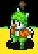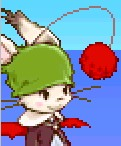
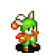 
|
| NAME: Animist |
| OVERVIEW: This class has attacks based on forest animals, similar to the FF5 Archer. |
| WEAPONS: Instrument |
ABILITIES/MAGIC:
Call/Calling:
Sheep Count - Put enemies to sleep
100% Wool - Cast Protect and Shell on self
Cuisine - Completely recover HP on adjacent target
Tail Wag - Charm enemy
Chocobo Rush - Call a stampede of chocobos to damage target
Frogsong/Toadsong - Inflict Frog on target
Friend - Call a random Summon
Catnip - Inflict Berserk on target
Reaction Abilities: Block Arrows/Archer's Bane - Evade bow attacks
Support Abilities: None
Combo: Animal Combo
|
| ATTRIBUTES: |
|
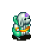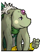
|
| NAME: Arcanist (FFTA2 Only) |
| OVERVIEW: A nu mou magician job that uses gravity spells and spells that are affected by the target's level. |
| WEAPONS: Rod |
ABILITIES/MAGIC:
Arcane Magick:
Gravity - Reduce HP by 25%
Lv. 3 Dark - Deal dark damage to units with levels divisible by 3
Lv. 5 Haste - Add Haste to units wtih levels divisible by 5
Lv. ? Shadowflare - Cast Shadowflare on units who share the first digit of the caster's level
Drain - Steal HP
Syphon - Steal MP
Graviga - Reduce HP by 50%
Death - Inflict KO
Reaction Abilities: MP Shield - Damage goes to MP instead of HP while MP is left
Support Abilities: Pierce - Spells cast are not affected by Reflect
|
| ATTRIBUTES: |
|
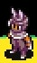
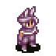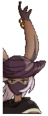
|
| NAME: Assassin |
| OVERVIEW: Originally an enemy class in Tactics, their abilities focus on stopping enemy actions in one stroke. |
| WEAPONS: Katana, Greatbow |
ABILITIES/MAGIC:
Corner/Assassination:
Shadowbind - Inflict Stop on target
Last Breath - Instant K.O. to target, high chance of failure
Aphonia - Inflict Silence on target
Nightmare - Inflict Sleep and Doom on target
Ague - Inflict Slow on target
Rockseal - Inflict Stone on target
Oblivion - Inflict Forgetfulness on target
Ultima Masher - Ultima attack for heavy damage
Reaction Abilities: Return Fire - Catch arrows and throw back at target
Support Abilities: None
Combo: Killer Combo
|
| ATTRIBUTES: High evasion, high HP, high defense |
|
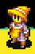 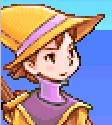 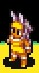 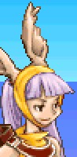
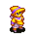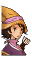 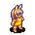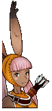 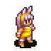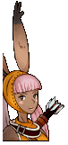 |
| NAME: Archer |
| OVERVIEW: See Archer. |
|
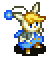 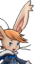 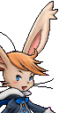 |
| NAME: Bard (FFTA2 Only) |
| OVERVIEW: See Bard. |
|
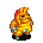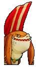 |
| NAME: Berserker (FFTA2 Only) |
| OVERVIEW: See Berserker. |
|
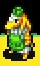 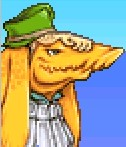
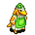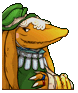 |
| NAME: Bishop |
| OVERVIEW: See White Mage. |
|
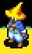  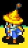 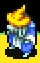 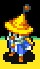 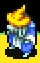
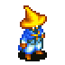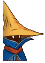 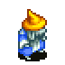 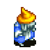 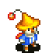 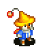 |
| NAME: Black Mage |
| OVERVIEW: See Black Mage. |
|
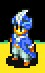 
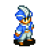 |
| NAME: Blue Mage |
| OVERVIEW: See Blue Mage. |
|
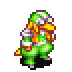
|
| NAME: Cannoneer (FFTA2 Only) |
| OVERVIEW: A bangaa that can use long-range special attacks. |
| WEAPONS: Hand-cannon |
ABILITIES/MAGIC:
Cannonry:
Buckshot - Next attack affects a radius
Prime - Next attack has higher power
Foresight - Next attack fires twice
Scope - Next attack has higher accuracy
Mortar - Deal heavy damage, but misses next turn
Target - Next attack deals heavy damage
Potion Shell - Heal target's HP
Ether Shell - Heal target's MP
Reaction Abilities: Blur - Avoid artillery attacks
Support Abilities: None
|
| ATTRIBUTES: |
|
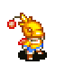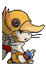
|
| NAME: Chocobo Knight (FFTA2 Only) |
| OVERVIEW: A special moogle class which can capture and ride chocobos, and takes over their abilities. Six different colors of chocobo can be ridden and the abilities change depending on the color. |
| WEAPONS: Knife, Sword, Blade, Saber, Knightsword, Rapier, Greatsword, Broadsword, Katana, Spear, Axe, Instrument, Rod, Staff, Mace, Pole, Knuckles, Hammer, Book |
ABILITIES/MAGIC:
Chococraft:
Choco Cure - Heal HP in area around user
Choco Esuna - Heal debuffs in area around user
Choco Flame - Fire a ball of flame
Choco Meteor - Non-elemental ranged damage
Choco Beak - Physical attack
Choco Recharge - Restore MP
Choco Guard - Add Regen, raise defense and resistance
Choco Barrier - Add Protect and Shell in area around user
Reaction Abilities: None
Support Abilities: None
|
| ATTRIBUTES: |
|
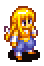 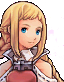 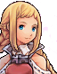 |
| NAME: Dancer (FFTA2 Only) |
| OVERVIEW: See Dancer. |
|
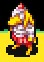 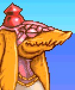
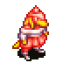  |
| NAME: Defender |
| OVERVIEW: See Paladin. |
|
 
   |
| NAME: Dragoon |
| OVERVIEW: See Dragoon. |
|
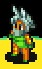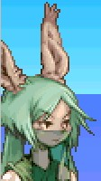
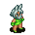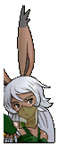 |
| NAME: Elementalist |
| OVERVIEW: Inflicts many status attacks. |
| WEAPONS: Rapier |
ABILITIES/MAGIC:
Spirit Magic/Elemental Magick:
Fire Whip - Inflict Fire-elemental damage and "Don't Act" on target
Earth Heal - Earth-elemental HP recovery
White Flame - Fire-elemental HP recovery
Shining Air - Inflict Air-elemental damage and Blind on target
Evil Gaze - Inflict Dark-elemental damage and Confuse on target
Heavy Dust - Inflict Earth-elemental damage and "Don't Move" on target
Sliprain - Inflict Water-elemental damage and Slow on target
Elementalshift - Shift target's elemental affiliation
Thunderous Roar - Inflict Thunder-elemental damage and Silence on target
Reaction Abilities: Absorb MP
Support Abilities: None
Combo: Spirit Combo
|
| ATTRIBUTES: High evasion, high HP, high defense |
|
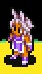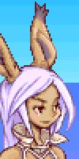
 |
| NAME: Fencer |
| OVERVIEW: A sword-fighting class with a variety of techniques. |
| WEAPONS: Rapier |
ABILITIES/MAGIC:
Lunge Tech/Fencing:
Swarmstrike - Summon a swarm of bugs to damage and inflict Poison on target
Shadowstick - Lower target's speed
Checkmate - Inflict Doom on target
Featherblow - Attack with 1/2 damage, but 2x accuracy
Swallowtail - Cause damage to all adjacent units
Manastrike - Cause MP damage
Piercethrough - Attack through two squares
Nighthawk - Distance attack
Reaction Abilities: Reflex - Evade all "Fight" actions
Support Abilities: Shieldbearer (Equip any shield)
Combo: Lunge Combo
|
| ATTRIBUTES: High evasion, high HP, high defense |
|

|
| NAME: Flintlock (FFTA2 Only) |
| OVERVIEW: An advanced gunner class, which can charge up cannons for special effects. Largely a support class, as opposed to Cannonneer. |
| WEAPONS: Hand-cannon |
ABILITIES/MAGIC:
Ballistics:
Prime - Required to use before any other ballistic attack can happen
Cure Cannon - Cure HP
Protect Cannon - Add Protect and Regen
Shell Cannon - Add Shell
Ether Boost - High-powered attack
Blowback - Sacrifice HP for a strong attack
Teleport Cannon - Teleport target to a random location
Ether Cannon - Restore MP to target
Reaction Abilities: Blur - Avoid artillery attacks
Support Abilities: Charged Attacks - Consume MP to deal additional damage
|
| ATTRIBUTES: |
|
 |
| NAME: Gadgeteer/Tinker |
| OVERVIEW: Flips a coin at the start of each ability to decide whether it will target all allies or all enemies |
| WEAPONS: Knuckle |
ABILITIES/MAGIC:
Pandora:
Red Spring - Cast Haste on all allies or enemies, depending on coin flip
Blue Screw - Cast Dispel on all allies or enemies, depending on coin flip
Green Gear - Cast Poison on all allies or enemies, depending on coin flip
Silver Disc - Cast Blind on all allies or enemies, depending on coin flip
Gold Battery - Recover HP on all allies or enemies, depending on coin flip
Black Ingot - Cast Doom on all allies or enemies, depending on coin flip
Chroma Gem - Cast Sleep on all allies or enemies, depending on coin flip
Yellow Spring/Gold Moogletron - Cast Barrier on all allies or enemies, depending on coin flip
Reaction Abilities: Auto-Regen/Regenerate - Cast Regen on self when attacked
Support Abilities: Damage > MP/MP Shield - When damaged, MP is lost instead of HP
Combo: Pandora Combo
|
| ATTRIBUTES: |
|
 |
| NAME: Geomancer (FFTA2 Only) |
| OVERVIEW: See Geomancer. |
|

|
| NAME: Green Mage (FFTA2 Only) |
| OVERVIEW: A mage who specializes in protective and status spells. |
| WEAPONS: Hammer, Mace |
ABILITIES/MAGIC:
Green Magick:
Protect - Raise defense
Shell - Raise resistance
Blind - Lower accuracy
Sleep - Put target to sleep
Silence - Stop target from casting spells
Tranq - Raise accuracy
Oil - Increase susceptibility to fire
Leap - Increase Move and Jump stats
Reaction Abilities: Evade Magick (resist all magical damage-causing attacks), Absorb MP (Gain MP equal to that expended by the attack)
Support Abilities: Spellbound - Increase duration of statuses inflicted
|
| ATTRIBUTES: |
|
 |
| NAME: Gunner/Fusilier |
| OVERVIEW: See Gunner. |
|

|
| NAME: Heritor (FFTA2 Only) |
| OVERVIEW: Adelle's class; uses a variety of powerful skills. |
| WEAPONS: Knife, Sword, Blade, Saber, Knightsword, Greatsword, Broadsword, Katana, Rod, Staff, Pole |
ABILITIES/MAGIC:
Instinct:
Wemut - Damage and inflict Slow
Nesiaam - Damage and inflict Addle
Lennart - Damage in a line from caster
Hilo - Damage and inflict Confuse
Elpe - Sacrifice user's HP to revive and fully restore all allies
Viola - Damage units in small area; higher damage if caster has low HP
Ljda - Inflict Charm
Adelaide - Add Regen to self
Reaction Abilities: None
Support Abilities: None
|
| ATTRIBUTES: |
|
| |
| NAME: Hermetic (FFTA Only) |
| OVERVIEW: Special character Ezel's job. Hermetic means associated with astrology or alchemy. |
| WEAPONS: Mace |
ABILITIES/MAGIC:
Hermetics:
Azoth - Put all enemies to sleep
Astra - Protect target from one status ailment
Reaction Abilities: Block Arrows - Dodge bow attacks
Support Abilities: Weapon Atk+
|
| ATTRIBUTES: |
|
  |
| NAME: Hunter |
| OVERVIEW: See Archer. |
|

   |
| NAME: Illusionist |
| OVERVIEW: An advanced version of the mage that affects all enemies. |
| WEAPONS: Rod |
ABILITIES/MAGIC:
Phantasm Skill/Illusion:
Prominence - Fire damage to all enemies
Tempest - Lightning damage to all enemies
Freezeblink - Ice damage to all enemies
Star Cross - Holy damage to all enemies
Stardust - Damage all enemies
Deluge - Water damage to all enemies
Soil Evidence/Rockfall - Earth damage to all enemies
Wild Tornado - Wind damage to all enemies
Reaction Abilities: Absorb MP
Support Abilities: Half MP/Halve MP
Combo: Spell Combo
|
| ATTRIBUTES: High magic power, low evasion, low HP |
|
| |
| NAME: Judgemaster (FFTA Only) |
| OVERVIEW: Special character Cid's job. His abilities allow you to manipulate many of the laws. |
| WEAPONS: Knightsword |
ABILITIES/MAGIC:
Advanced Law:
Abate - Skip Judge's turn once to allow a violation
Judge Sword - Damage and steal JP
Bind - Immobilize and disable target for arrest
JP Gift - Give JP to an ally
Yellow Clip - Nullify a yellow card from the record
Reaction Abilities: None
Support Abilities: None
|
| ATTRIBUTES: |
|
 |
| NAME: Juggler |
| OVERVIEW: An unusual class, but with many useful abilities. Evolves from Moogle Thief. |
| WEAPONS: Knife |
ABILITIES/MAGIC:
Stunt/Acrobatics:
Hurl - Throw an item from inventory at enemy
Weapon Toss - Throw a weapon from inventory at enemy
Ring/Ring Toss - Inflict Stop on target
Firebomb/Molotov Cocktail - Cause damage and Berserk
Ball/Ball Toss - Inflict Confuse
Dagger/Dagger Toss - Cause damage and "Don't Act"
Smile/Smile Toss - Smile at ally to give them next turn instantly
Gil Toss - Throw 30 gil at enemy to cause exactly 30 points of damage
Reaction Abilities: Catch/Sticky Fingers (catch and keep thrown items), Return Fire (catch arrows and throw them back)
Support Abilities: None
Combo: Juggle Combo
|
| ATTRIBUTES: High accuracy |
|

|
| NAME: Lanista (FFTA2 Only) |
| OVERVIEW: A seeq physical class with a variety of attack skills. |
| WEAPONS: Greatsword |
ABILITIES/MAGIC:
Astutia:
Souleater - Sacrifice HP to deal dark damage
Block! - Raise defense in area around unit
Strike! - Raise critical hit % in area around unit
Haunting Vision - Damage and blind target
Sword of Light - Steal MP
Sword of Darkness - Steal HP
Charge! - Deal damage, knock target back, and destroy armor
Razzle-dazzle - Steal HP from surrounding units
Reaction Abilities: Blink Counter (counterattack and knock target back), Dragonheart (Grant Reraise after taking damage)
Support Abilities: Monkey Grip - Wield two-handed swords with one hand
|
| ATTRIBUTES: |
|

|
| NAME: Master Monk (FFTA2 Only) |
| OVERVIEW: Another physical fighting bangaa class, but with some unusual methods of attacking. |
| WEAPONS: Pole |
ABILITIES/MAGIC:
Martial Arts:
Dark Fist - Sacrifice HP to attack two squares in front
Inner Focus - Restore HP and remove debuffs to self
Pummel - Attack twice in a row
Cross-Counter - Use target's own Counter reaction to deal damage
Rend Armor - Attack and destroy armor
Holy Strike - Holy-elemental attack
Lifebane - Inflict Doom
Withering Strike - Deal damage based on how low user's HP is
Reaction Abilities: Blink Counter - Counterattack and knock target back.
Support Abilities: Unscarred - Raise stats when at full HP
|
| ATTRIBUTES: |
|
  |
| NAME: Mog Knight |
| OVERVIEW: See Warrior. |
|
|
| NAME: Morpher (FFTA Only) |
| OVERVIEW: This class morphs into enemies which the Morpher has the souls of. The only way to get souls is to harvest them from monsters captured by a Hunter. |
| WEAPONS: Soul |
ABILITIES/MAGIC:
Morph:
Goblin - Morph into a Goblin
Flan - Morph into a Flan
Bomb - Morph into a Bomb
Dragon - Morph into a Dragon
Lamia - Morph into a Lamia
Bug - Morph into a Bug
Panther - Morph into a Panther
Malboro - Morph into a Malboro
Floateye - Morph into a Floateye
Damage > MP - When damaged, MP is lost instead of HP
Reaction Abilities: None
Support Abilities: None
Combo: Morph Combo
|
| ATTRIBUTES: High magic power, high MP, high magic defense |
|
 |
| NAME: Ninja |
| OVERVIEW: See Ninja. |
|
 |
| NAME: Paladin |
| OVERVIEW: See Paladin. |
|

|
| NAME: Parivir (FFTA2 Only) |
| OVERVIEW: An eastern fighter, specializing in elemental attacks. Similar to the Elementalist, but with short-range physical attacks instead of long-range magical ones. |
| WEAPONS: Katana |
ABILITIES/MAGIC:
Flair:
Wind Slash - Deal wind damage.
Blade Bash - Immobilize enemy.
Iai Blow - Non-elemental attack. Low power, inflicts KO.
Lifethread Blade - Dark-elemental attack. Inflicts Doom.
Skyfury Blade - Lightning-elemental attack. Inflicts Berserk.
Hoarfrost Blade - Ice-elemental attack. Inflicts Slow.
Shimmering Blade - Fire-elemental attack. Inflicts Confuse.
Unburden Soul - Sacrifice self to heal HP and debuffs from allies.
Reaction Abilities: Strike Back - Avoid basic attack and counterattack.
Support Abilities: Death Strike - Increase chance for critical hit.
|
| ATTRIBUTES: |
|

|
| NAME: Ranger (FFTA2 Only) |
| OVERVIEW: A seeq job that specializes in laying traps. |
| WEAPONS: Knife, Bow |
ABILITIES/MAGIC:
Survivalism:
Sten Needle - Lays a trap that damages target
Awareness - Reveal locations of traps and invisible units
Silence Gas - Lays a trap that silences target
Life Bond - Restore target's HP but damage user
Leech - Lays a trap that damages MP
Mirror Items - Use an item to achieve the opposite effect (e.g. damage using Potions)
Camouflage - Become Invisible
Love Potion - Lays a trap that charms target
Reaction Abilities: Critical:Vanish - Become invisible when in critical status
Support Abilities: Item Lore (Items have double power); Avoid Traps
|
| ATTRIBUTES: |
|
 |
| NAME: Raptor (FFTA2 Only) |
| OVERVIEW: See Soldier. |
|

|
| NAME: Ravager (FFTA2 Only) |
| OVERVIEW: A gria class with powerful physical attacks. |
| WEAPONS: Greatsword |
ABILITIES/MAGIC:
Feralism:
En Garde - Unit will counter attacks until next turn.
Battle Cry - Raise attack but lower defense
Sweeping Spin - Damage surrounding units
Sneak Attack - Deal more damage to units facing away
Tenacity - Deal more damage when target has debuffs
Overpower - Attack and bypass reaction ability
Full Assault - Powerful attack that leaves the attacker in Sleep status
Blast Wave - Damage in a line from attacker
Reaction Abilities: Bonecrusher - Attack with greater damage than dealt; Strike Back (Avoid basic attack and counterattack)
Support Abilities: Defense Up; Unscarred (raise stats at full HP); Tank (equip heavy armor)
|
| ATTRIBUTES: |
|
| |
| NAME: Runeseeker (FFTA Only) |
| OVERVIEW: Special character Babus' job. Has some gravity based attacks |
| WEAPONS: Mace |
ABILITIES/MAGIC:
Rune:
Explode - Deal enormous explosive damage
Stillness - Freeze time and stop all units in an area
Quarter - Take off 1/4 of enemy's HP
Demi - Take off 1/2 of enemy's HP
Reaction Abilities: Counter
Support Abilities: None
|
| ATTRIBUTES: |
|
 |
| NAME: Sage |
| OVERVIEW: An evolution from the White Mage and Beastmaster, though it seems to have no commonality to its abilities besides Black Magic. |
| WEAPONS: Mace |
ABILITIES/MAGIC:
Sagacity Skill/Sagacity:
Drain - Absorb HP from target
Blind - Inflict Blind on enemy
Water - Water-elemental damage
Aero - Wind-elemental damage
Raise - Heal ally or revive K.O.'d ally with 50% of his/her max HP
Giga Flare/Gigaflare - Damage enemies with explosion
Bio - Damage and Poison enemy
Esunaga - heal status effects from an area
Scathe - High non-elemental damage in a straight line from caster
Ultima Blow - Deal heavy magic damage
Reaction Abilities: Reflex - Evade all "Fight" actions
Support Abilities: Shieldbearer (Equip any shield), Weapon Def+
Combo: Wise Combo
|
| ATTRIBUTES: High evasion |
|
 |
| NAME: Scholar (FFTA2 Only) |
| OVERVIEW: See Scholar. |
|

|
| NAME: Seer (FFTA2 Only) |
| OVERVIEW: The hume version of the Red Mage, with some extra flair. Their Magick Frenzy, used with the proper combination of abilities, can be devastating. |
| WEAPONS: Books |
ABILITIES/MAGIC:
High Magick:
Cura - Moderate HP restoration
Esuna - Restore debuffs from one target
Raise - Restore ally from KO
Fira - Moderate fire damage
Blizzara - Moderate ice damage
Thundara - Moderate thunder damage
Recharge - Restore MP
Magick Frenzy - Attack with magick followed by a physical attack.
Reaction Abilities: Replenish MP - Gain MP equal to damage taken.
Support Abilities: Pierce - Spells cast are unaffected by Reflect.
|
| ATTRIBUTES: |
|

|
| NAME: Sky Pirate (FFTA2 Only) |
| OVERVIEW: Vaan's job. Concentrates on fast attacks and stealing things. |
| WEAPONS: Sword, Blade, Saber |
ABILITIES/MAGIC:
Piracy:
Shadow Stalk - Attack and bypass reaction ability
Salvage - Disarm trap and get loot
Steal - Steal item, loot or gil
Razor's Edge - Raise Evasion
Life of Crime - Deal more damage the more times you have Stolen
Flee - Raise Move and Jump
Trophy Hunt - Weak attack which yields the best loot if it kills the enemy
Swipe - Steal a large amount of gil
Reaction Abilities: Sticky Fingers - Catch items thrown at unit
Support Abilities: Vigilance - Attacks from back and sides deal normal damage
|
| ATTRIBUTES: |
|
 |
| NAME: Sniper |
| OVERVIEW: An class with a combination of Assassin and Archer characteristics. It's status attacks are based on the range of the weapon. |
| WEAPONS: Greatbow |
ABILITIES/MAGIC:
Sharpshoot/Sharpshooting:
Doubleshot - Attack twice with weaker, inaccurate shots
Beso Toxico - Damage and inflict Poison on target
Death Sickle - Cause Doom on target
Conceal/Vanish - Turn invisible to ambush the enemy
Doom Archer/Marksman's Spite - Inflict damage equal to lost HP + lost MP
Aim: Armor/Armor Shot - Destroy target's armor
Aim: Weapon/Weapon Shot - Destroy target's weapon
Aim: Wallet/Wallet Shot - Steal gil from enemy
Reaction Abilities: Auto-Regen/Regenerate - Inflict Regen on self when attacked
Support Abilities: None
Combo: Sniper Combo
|
| ATTRIBUTES: High attack power |
|
 |
| NAME: Soldier |
| OVERVIEW: See Soldier. |
|

|
| NAME: Spellblade (FFTA2 Only) |
| OVERVIEW: A viera physical class that causes status effects. |
| WEAPONS: Sword |
ABILITIES/MAGIC:
Blade Arts:
Stun Blade - Damage and inflict Immobilize
Poison Blade - Damage and inflict Poison
Sleep Blade - Damage and inflict Sleep
Oil Blade - Damage and inflict Oil
Slow Blade - Damage and inflict Slow
Confuse Blade - Damage and inflict Confuse
Maim Blade - Damage and inflict Disable
Doom Blade - Damage and inflict Doom
Reaction Abilities: Critical:Evasion: Increase Evasion when in critical status
Support Abilities: Blood Price - Spells cost HP instead of MP.
|
| ATTRIBUTES: |
|
 |
| NAME: Templar |
| OVERVIEW: Specialty is stopping mages from using their powers, and improving Bangaa disadvantages. |
| WEAPONS: Knightsword, spear |
ABILITIES/MAGIC:
Sacred Tech/Sacred Blade:
Astra - Protect target from one status ailment
War Cry/Piercing Cry - Lower speed of adjacent units
Rasp - Draing MP from target
Cheer/Discipline - Increase attack power of self
Silence - Cause Silence on target
Soul Sphere - Inflict MP damage on target
Haste - Increase speed of target
Lifebreak - Damage target equal to damage sustained
Reaction Abilities: Bonecrusher - Counter with 150% more attack power
Support Abilities: Weapon Atk+/Attack Up
Combo: Sacred Combo
|
| ATTRIBUTES: Low speed |
|
   |
| NAME: Thief |
| OVERVIEW: See Thief. |
|

|
| NAME: Trickster (FFTA2 Only) |
| OVERVIEW: A fast bangaa job that inflicts long-range status effects. |
| WEAPONS: Cards |
ABILITIES/MAGIC:
Sleight of Hand:
Hypochondria - Inflict Poison
Snigger - Inflict Berserk
Shadow of Doubt - Inflict Immobilize
Mug - Attack and steal loot
Traumatize - Attack and deal higher damage to units with debuffs
Agitate - Deal damage equal to user's lost HP
Charisma - Inflict Charm
Suggestion - Inflict Toad
Reaction Abilities: Absorb Damage - Gain HP equal to 10% of damage sustained
Support Abilities: Ribbon-bearer - Equip ribbons
|
| ATTRIBUTES: |
|

|
| NAME: Viking (FFTA2 Only) |
| OVERVIEW: A strong seeq class that also deals thunder damage. |
| WEAPONS: Axe, Hammer |
ABILITIES/MAGIC:
Brutality:
Thunder - Light thunder damage
Thundara - Moderate thunder damage
Thundaga - Heavy thunder damage
Pickpocket - Steal gil
Strong-arm - Damage and steal item
War Cry - Raise resilience of surrounding units
Tsunami - Deal water damage and MP damage; only usable when caster is in water
Pillage - Damage and steal armor
Reaction Abilities: Absorb Damage (gain 10% of damage dealt); Gil Snapper (obtain gil after receiving a critical hit)
Support Abilities: Safeguard (prevents weapon from being stolen/destroyed), Doublehand (hold one-handed weapon with two hands)
|
| ATTRIBUTES: |
|

 |
| NAME: White Monk |
| OVERVIEW: See Monk. |
|
 |
| NAME: Warrior |
| OVERVIEW: See Soldier. |
|
Final Fantasy, all games and animation bearing the Final Fantasy name, and all characters in said games or animation are copyright their respective creators, including but not limited to Squaresoft, Square Enix, Square EA, Tokyo TV, and ADV Films.
 Characters
Characters Places
Places Stories
Stories Species
Species Organizations
Organizations Glossary
Glossary Transportation
Transportation Monsters
Monsters Jobs
Jobs Summons
Summons Items
Items Magic/Skills
Magic/Skills Weapon Types
Weapon Types In-Crossovers
In-Crossovers Ex-Crossovers
Ex-Crossovers Release Dates
Release Dates Name Origins
Name Origins Famous Moments
Famous Moments Music Database
Music Database Features
Features Game Help
Game Help Game Evolution
Game Evolution Square Art
Square Art Fan Flash
Fan Flash Final Fantasy Forums
Final Fantasy Forums Updates
Updates Site Info
Site Info Feedback
Feedback Full Index
Full Index Links
Links Staff
Staff